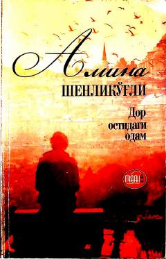

DOTurk yozuvchisining insoniy ma'naviyat va adolat haqidagi ta'sirchan romani.
Bu roman 1949 yilda boshqa bir mamlakatda yuz bergan voqeaga asoslangan bo'lib, turk yozuvchisi Amina Shenlikugli qalamiga mansub. Asar Abror Adaam o'g'li tomonidan o'zbek tiliga tarjima qilingan va 2021 yilda Toshkentda nashr etilgan. Roman o'quvchini kuldirib ham, yig'latib ham, insonning ma'naviy yuksaklikka intilishi haqida chuqur o'ylantiradi.